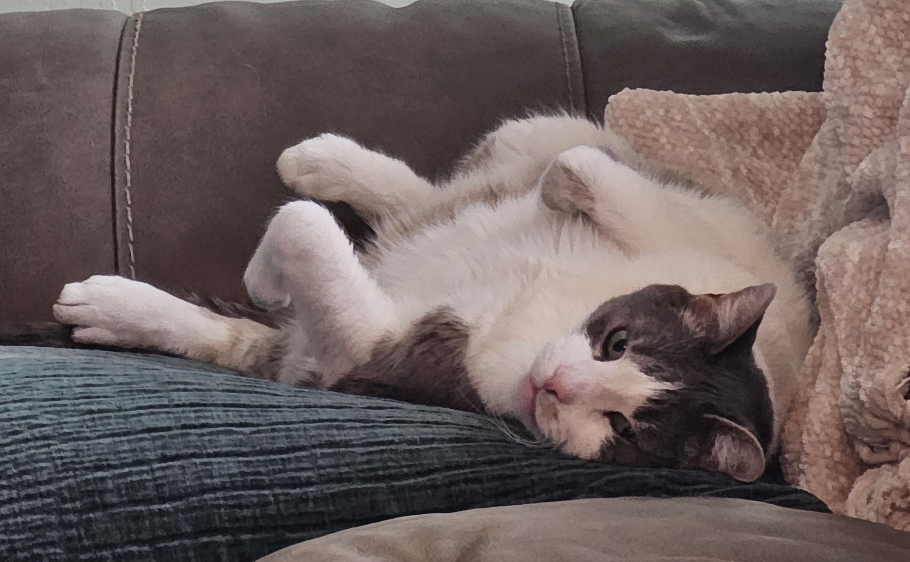
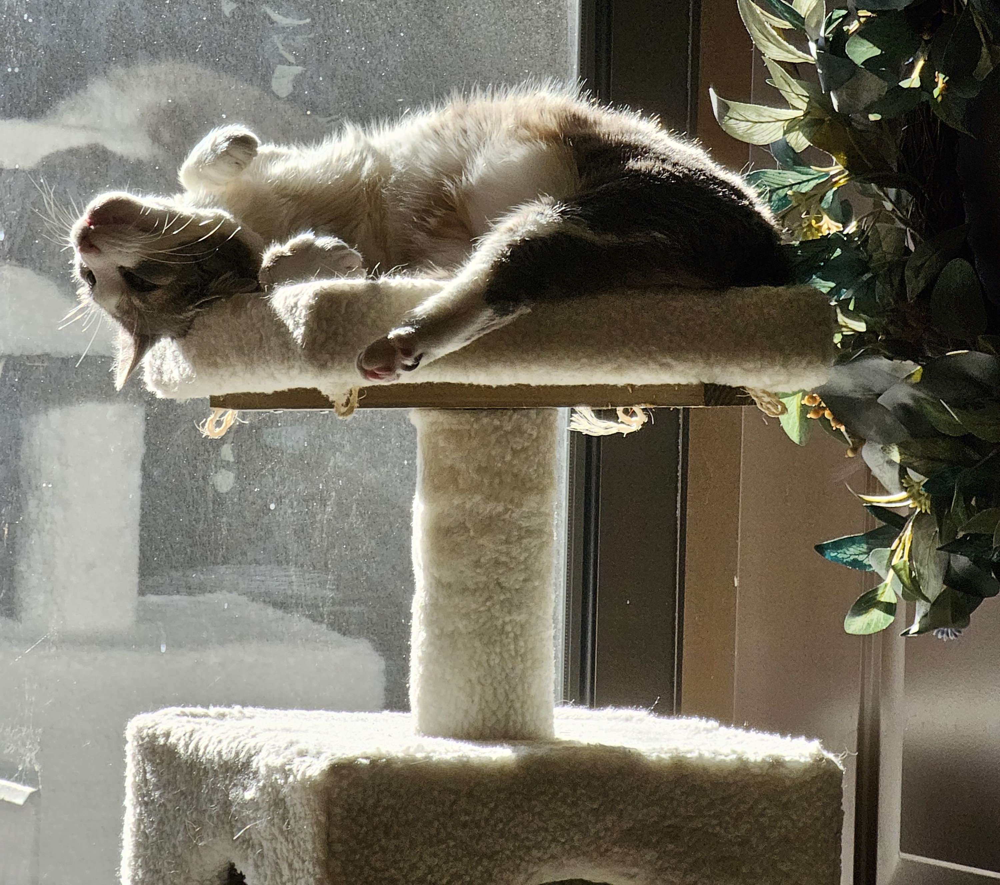
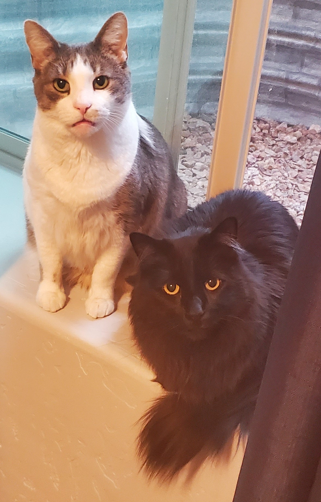

This page is just the amalgamation of anything non-academic that I felt like putting on this website. For example, I'm quite interested in linguistics. Constructed languages, specifically. Anecdotally, there seems to be some overlap between people who are into math and people who are into linguistics. From a philosophical perspective, I suppose they are similar subjects.
I love cats! Below are some pictures of the cats I had as a kid; the white/grey one was adopted when I was nine years old, and he's still thriving at my parents' house. The black one is a few years younger.
  If you're interested, feel free to check out my GitHub page. I can't guarantee that any of the code there is "good"; some of it was written many years ago when I was in high school.